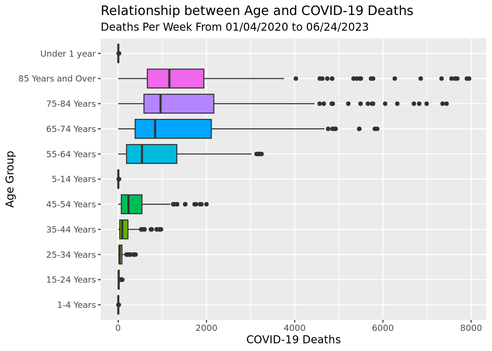
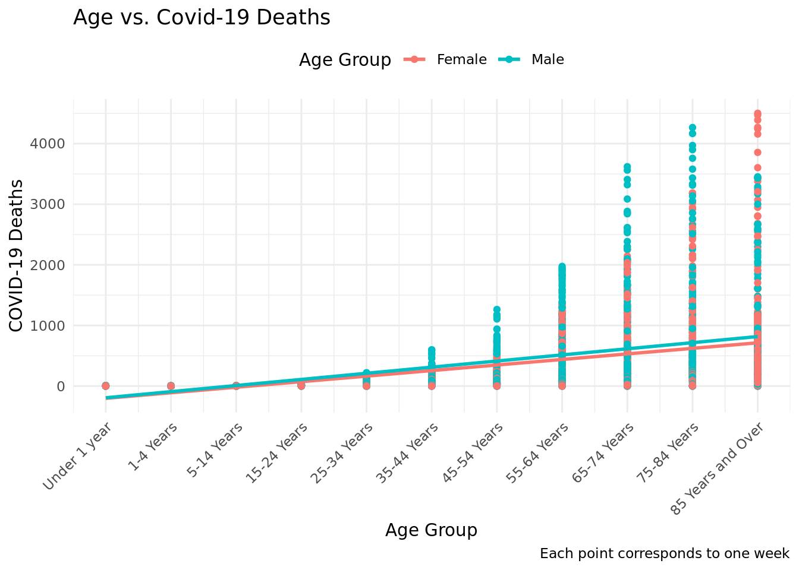

library(tidyverse)
library(dplyr)
library(tidymodels)
library(MASS)Covid-19 Report
Report
Introduction and data
The global outbreak of COVID-19 has created a need for comprehensive data to understand the impact that the virus held. This research seeks to uncover the paterns of Covid-19 related mortality in the United States in correlation with demographic factors. The data in this data set is collected and updated every week and covers information within all 50 states of the USA and the District of Columbia. The counts the number of COVID-19 deaths are based on data stored in the National Vital Statistic System. These observations are then added every week. Each Observation of the dataset represents the count of Covid-19 death in a given week, state, specific age group, and sex. So for every single week, there will be an observation for every combination of every subgroup (state, age, group, and sex). The data is sourced from the CDC’s National Center for Health Statistics (NCHS, 2023). Our research question is: What is the relationship between age groups and COVID-19 mortality rates in the United States over time, and how have these rates evolved from the start of the pandemic until June 28, 2023? This research question allows us to see how Covid-19 mortality rates have changed over time among different age groups which helps us better understand the dynamic of the virus and how the pandemic potentially evolve. The research topic will be to observe trends in COVID-19 deaths given different geographic groups and how these trends evolve over time. A feasible hypothesis can be that those in older age groups will have higher mortality rate compared to the rest of the demographic. The types of variables in my research question include both Categorical and quantitative. Age in this context would be categorical because we are grouping age together and looking at specific age groups. The number of deaths in each observation is Quantitative. Sex and date are all categorical.
Given the nature of health data, it is essential to acknowledge and address potential ethical considerations. The data used in this dataset is annonymized and aggregate, which adheres to the highest standard of privacy. This allows the overarching goal of valuable significant insights while respecting the confidentiality of individuals involved in the dataset.
Methodology
The methodology section should include visualizations and summary statistics relevant to your research question. You are required to provide writing that explains the trends / patterns the visualization(s) displays as it relates to your research question. This writing can be treated as a “rough draft” for your final, but should also provide enough detail to state and justify the choice of statistical method(s) used to answer your research question.
Research Question: “What is the relationship between age groups and COVID-19 mortality rates in the United States over time, and how have these rates evolved from the start of the pandemic until June 28, 2023? What about the relationship between sex and COVID-19 mortality rate?”
covidData <- read_csv("data/Covid19Dataset.csv")Rows: 6552 Columns: 8
── Column specification ────────────────────────────────────────────────────────
Delimiter: ","
chr (5): Data as of, State, End Week, Sex, Age Group
dbl (3): MMWR Week, Total Deaths, COVID-19 Deaths
ℹ Use `spec()` to retrieve the full column specification for this data.
ℹ Specify the column types or set `show_col_types = FALSE` to quiet this message.#｜label: take out all ages, keep only all sex
covidData_Ages <- covidData |>
filter(!str_detect(`Age Group`,"All Ages"),str_detect(Sex, "All Sex"),ignore_case = TRUE)
covidData_Ages# A tibble: 2,002 × 8
`Data as of` State `MMWR Week` `End Week` Sex `Age Group` `Total Deaths`
<chr> <chr> <dbl> <chr> <chr> <chr> <dbl>
1 06/28/2023 United … 1 01/04/2020 All … Under 1 ye… 403
2 06/28/2023 United … 1 01/04/2020 All … 1-4 Years 79
3 06/28/2023 United … 1 01/04/2020 All … 5-14 Years 99
4 06/28/2023 United … 1 01/04/2020 All … 15-24 Years 605
5 06/28/2023 United … 1 01/04/2020 All … 25-34 Years 1261
6 06/28/2023 United … 1 01/04/2020 All … 35-44 Years 1771
7 06/28/2023 United … 1 01/04/2020 All … 45-54 Years 3284
8 06/28/2023 United … 1 01/04/2020 All … 55-64 Years 7936
9 06/28/2023 United … 1 01/04/2020 All … 65-74 Years 11789
10 06/28/2023 United … 1 01/04/2020 All … 75-84 Years 14546
# ℹ 1,992 more rows
# ℹ 1 more variable: `COVID-19 Deaths` <dbl>Because the dataset contains all possible combinations of sex and age groups given a specific end week, we decided to drop all observations with “All Ages,” which includes all ages in each observation, which would not allow us to visualize the relationship between COVID-19 deaths and specific age groups. Furthermore, we filtered the dataset to only include the Sex of “All Sex” because it already includes both the female and male data(Female data + male data = All Set Data). If we included the separate female and male observations, then the data would overlap. After dropping these rows in the “Ages” columns, we were able to graph our box plot visualization of the COVID-19 Deaths and each age group.
covidData_Ages |>
ggplot(
aes(
y = `Age Group`, x = `COVID-19 Deaths`, fill = `Age Group`
)
) +
geom_boxplot() +
labs(title = "Relationship between Age and COVID-19 Deaths",
subtitle = "Deaths Per Week From 01/04/2020 to 06/24/2023")+
theme(legend.position = "none")
From our visualization, we can conclude that that the median of COVID-19 Deaths of those 85 years and over is the highest. This trend stays mostly consistent throughout: as the age group increases, the median number of COVID-19 Deaths increase.
covidData_sex <- covidData |>
filter(!str_detect(Sex,"All Sex"),str_detect(`Age Group`,"All Ages"),ignore_case=TRUE)
covidData_sex |>
ggplot(aes(x = Sex, y = `COVID-19 Deaths`, fill = Sex)) +
geom_bar(stat = "identity", width = 0.7) +
labs(title = "Total COVID-19 Deaths by Sex",
subtitle = "From 01/04/2020 to 06/24/2023",
x = "Sex",
y = "COVID-19 Deaths (Thousands)") +
scale_y_continuous(labels = scales::comma_format(scale = 1e-3)) +
theme(legend.position = "none")
For the same reason as above, we filtered the dataset to drop all sex and only keep rows that are all ages so there isn’t repetition. We used a barplot to visualize the relationship between total deaths of male compared to females.
newAges <- covidData_Ages |> #make ages numerical from 1-11 and then
mutate(`Age Group` = case_when( #take out all ages, keep only all sex
`Age Group` == "Under 1 year" ~ 1,
`Age Group` == "1-4 Years" ~ 2,
`Age Group` == "5-14 Years" ~ 3,
`Age Group` == "15-24 Years" ~ 4,
`Age Group` == "25-34 Years" ~ 5,
`Age Group` == "35-44 Years" ~ 6,
`Age Group` == "45-54 Years" ~ 7,
`Age Group` == "55-64 Years" ~ 8,
`Age Group` == "65-74 Years" ~ 9,
`Age Group` == "75-84 Years" ~ 10,
`Age Group` == "85 Years and Over"~ 11,
))modelsex <-linear_reg() |>
set_engine("lm") |>
fit(`COVID-19 Deaths` ~ Sex , data = covidData_sex)
glance(modelsex)$r.squared[1] 0.00992005modelage <- linear_reg() |>
set_engine("lm") |>
fit(`COVID-19 Deaths` ~ `Age Group`, data = newAges)
glance(modelage)$r.squared[1] 0.2976486The R^2 coefficient for the sex model is 0.0099, which indicates that 0.99% of the variation in the COVID-19 deaths is explained by sex. This is a relatively low R^2 coefficient, suggesting that this model may not be a good or accurate fit for the data set. The majority of the variability remains unexplained.
The R^2 coefficient for the age model is 0.30, which indiciates that 30% of the variation in the COVID-19 deaths is explained by age, specifically their age group. This R^2 coefficient is significantly higher than the R^2 coefficient for the sex model. This means that the age model is able to account for a moderate portion of the variation observed in COVID-19 deaths based on age groups. However, there is still a decent portion of the data that remains unexplained by the “Age Group” variable.
newAgeSex <- covidData |>
mutate(`Age Group` = case_when(
`Age Group` == "Under 1 year" ~ 1,
`Age Group` == "1-4 Years" ~ 2,
`Age Group` == "5-14 Years" ~ 3,
`Age Group` == "15-24 Years" ~ 4,
`Age Group` == "25-34 Years" ~ 5,
`Age Group` == "35-44 Years" ~ 6,
`Age Group` == "45-54 Years" ~ 7,
`Age Group` == "55-64 Years" ~ 8,
`Age Group` == "65-74 Years" ~ 9,
`Age Group` == "75-84 Years" ~ 10,
`Age Group` == "85 Years and Over"~ 11,
)) |>
filter(!str_detect(Sex, "All Sex")) |>
drop_na(`Age Group`)
newAgeSex# A tibble: 4,004 × 8
`Data as of` State `MMWR Week` `End Week` Sex `Age Group` `Total Deaths`
<chr> <chr> <dbl> <chr> <chr> <dbl> <dbl>
1 06/28/2023 United … 1 01/04/2020 Male 1 214
2 06/28/2023 United … 1 01/04/2020 Male 2 42
3 06/28/2023 United … 1 01/04/2020 Male 3 51
4 06/28/2023 United … 1 01/04/2020 Male 4 445
5 06/28/2023 United … 1 01/04/2020 Male 5 888
6 06/28/2023 United … 1 01/04/2020 Male 6 1127
7 06/28/2023 United … 1 01/04/2020 Male 7 2020
8 06/28/2023 United … 1 01/04/2020 Male 8 4801
9 06/28/2023 United … 1 01/04/2020 Male 9 6736
10 06/28/2023 United … 1 01/04/2020 Male 10 7451
# ℹ 3,994 more rows
# ℹ 1 more variable: `COVID-19 Deaths` <dbl>This new dataset is created to remove all the rows with “All Sex” and “All Age” groups. This way, we can introduce the AiC model to analyze both of the variables as predictors, which wouldn’t be accurate if we kept the “All Sex” and “All Age” groups. This is because by removing these “All” groups, we ensure that our analysis focuses on specific categories, namely “female” and “male” for sex, and individual age groups.
lm_fwd <- lm(`COVID-19 Deaths` ~ `Age Group`, data = newAgeSex)
stepAIC(lm_fwd, scope = ~`Age Group` + `Sex`, direction = "forward")Start: AIC=49435.94
`COVID-19 Deaths` ~ `Age Group`
Df Sum of Sq RSS AIC
+ Sex 1 3139920 917599869 49424
<none> 920739789 49436
Step: AIC=49424.26
`COVID-19 Deaths` ~ `Age Group` + Sex
Call:
lm(formula = `COVID-19 Deaths` ~ `Age Group` + Sex, data = newAgeSex)
Coefficients:
(Intercept) `Age Group` SexMale
-322.13 96.31 56.01 Because the AIC is lower for models with the two predictors ‘Age Group’ and ‘Sex’, compared to the model with only the ‘Age Group’ model, then the model with both predictors is better-fitting because AIC rewards models that provide a good fit to the data. Models that can explain a large portion of the data’s variation receive a higher score.
AgeSexlm<- linear_reg() |>
set_engine("lm") |>
fit(`COVID-19 Deaths`~ `Age Group` * Sex, data = newAgeSex)
tidy(AgeSexlm)# A tibble: 4 × 5
term estimate std.error statistic p.value
<chr> <dbl> <dbl> <dbl> <dbl>
1 (Intercept) -294. 22.9 -12.8 8.12e- 37
2 `Age Group` 91.6 3.38 27.1 2.41e-148
3 SexMale -0.598 32.5 -0.0184 9.85e- 1
4 `Age Group`:SexMale 9.43 4.78 1.97 4.87e- 2\[\begin{gather*} \widehat{COVID-19} = -293.83 + 91.59 * AgeGroup -0.598*Gender + 9.434*AgeGroup*Gender \\ Gender =\begin{cases}1 & \text{Male}\\ 0 & \text{Female}\end{cases} \end{gather*}\]
Holding gender constant, every increase in age group will result in 91.59 increase in mortality cases.
newAgeSex |>
ggplot(
aes(
x = `Age Group`, y = `COVID-19 Deaths`, color = Sex
)
) +
geom_point() +
geom_smooth(method = "lm", se = FALSE) +
scale_x_continuous(
breaks = 1:11, # Set breaks for x-axis ticks
labels = c(
"Under 1 year", "1-4 Years", "5-14 Years", "15-24 Years", "25-34 Years",
"35-44 Years", "45-54 Years", "55-64 Years", "65-74 Years", "75-84 Years",
"85 Years and Over"
) # Set labels for x-axis ticks
) +
labs(
x = "Age Group",
y = "COVID-19 Deaths",
title = "Age vs. Covid-19 Deaths",
caption = "Each point corresponds to one week") +
theme_minimal() +
theme(legend.position = "top", axis.text.x = element_text(angle = 45, hjust = 1)) +
guides(color = guide_legend(title = "Age Group"))`geom_smooth()` using formula = 'y ~ x'
There is evidence that the relationship between mortality and age is different by gender because the slope of each line of best fit for each gender is different. Male mortality increases by a greater amount for every increment in age group when compared to Female.
Results
Provide results from your analysis that answer your research question. Reminder, the goal is not calculate every possible statistic and perform every possible procedure for all variables. You should demonstrate that you are proficient at asking meaningful questions and answering them using data, that you are skilled in interpreting and presenting results, and that you can accomplish these tasks using R. More is not better.
You are encouraged to provide writing that interprets your results and answers your research question. This includes writing a scope of inference. The writing is optional for the draft, but will be a requirement on the final.
Summary In summary, our research project looked into determining a relationship between factors like age and sex with Covid-19 mortality rates. In terms of age, the data indicated a result similar to the alternative hypothesis in that older individuals will have a higher mortality rate. However, with a \(R^2\) value approximately 30%, that leaves majority of the variability unexplained. In context, this would indicate that old age may be a factor in higher morality rates, but there are likely many other factors that are also associated with Covid-19 mortality rates. Since our data was collected in a manner that was neither random assignment nor random sampling, the results found would not be generalizable and not causal.
In terms of sex, the data seems to suggest that males are more prone to death when it comes to Covid-19 cases. However, with a \(R^2\) value of 0.001, that means most of the random variables are unexplained. The implications behind this \(R^2\) value is that gender has almost no implication on Covid-19 mortality rate.
Workflow + Formatting
To earn full credit, please be mindful of the following:
Have an updated about qmd for your project.
Responded to / Closed all issues from your proposal from chosen data set.
Your website must be able to be rendered by me and your lab leader prior to submission.
EVERYONE in your group must have at least 3 commits.
Pipes %>%, |> and ggplot layers + should be followed by a new line.
All binary operators should be surrounded by space. For example x + y is appropriate. x+y is not.
All team members should contribute to the GitHub repository, with regular meaningful commits.